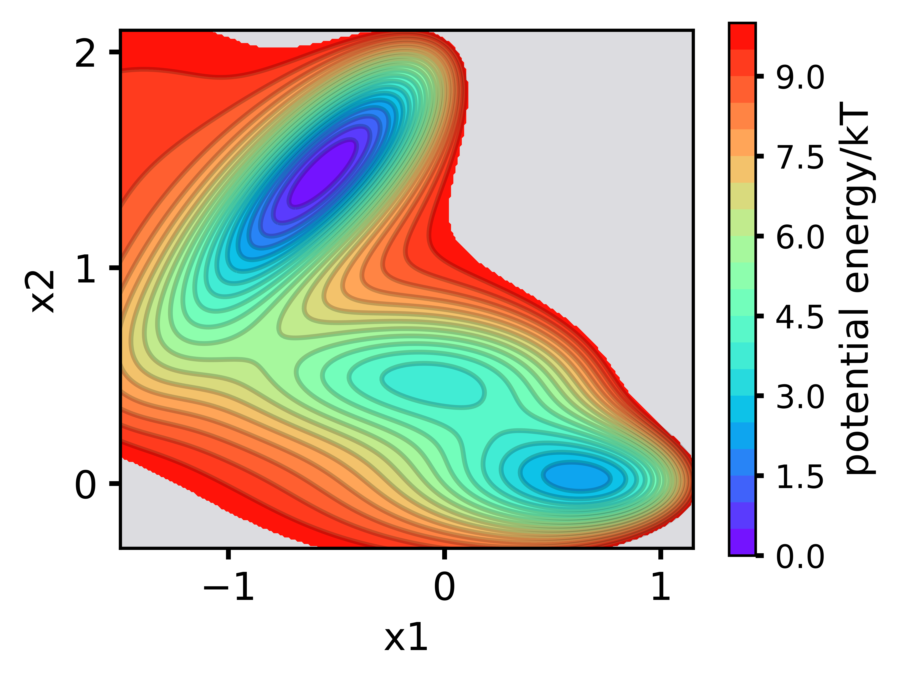
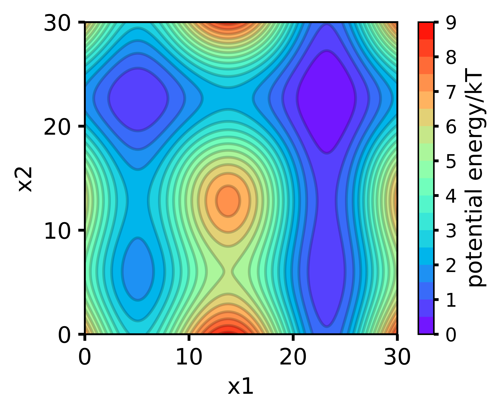

Tutorials
Jupyter notebook examples
|
Example on muller potential

|
Example on quadruple-well potential

|
Start with python script
python ./ts-dart/scripts/train_tsdart.py \
--seed 1 \
--device 'cpu' \
--lag_time 10 \
--encoder_sizes 2 20 20 20 10 2 \
--feat_dim 2 \
--n_states 2 \
--beta 0.01 \
--gamma 1 \
--proto_update_factor 0.5 \
--scaling_temperature 0.1 \
--learning_rate 0.001 \
--pretrain 10 \
--n_epochs 20 \
--train_split 0.9 \
--train_batch_size 1000 \
--data_directory ./ts-dart/data/quadruple-well \
--saving_directory .
Or
sh ./ts-dart/scripts/train_tsdart.sh